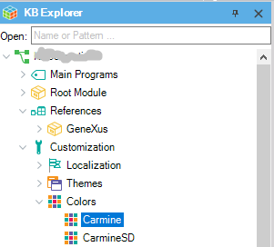
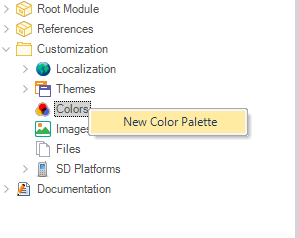
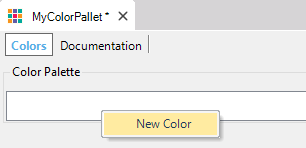

Defines a set of colors to be used in a Theme. Look at the Colors subnode under the Customization node:  There are predefined Color Palettes, and you can also define your Color Pallets. To define a new Color Palette right click on the Colors node and select New Color Palette as shown below:  Then, you only have to define the color list (each one with a name and the corresponding value):  To use a Color Palette, you only have to make reference to it from the desired Theme using the ColorPalette property. |